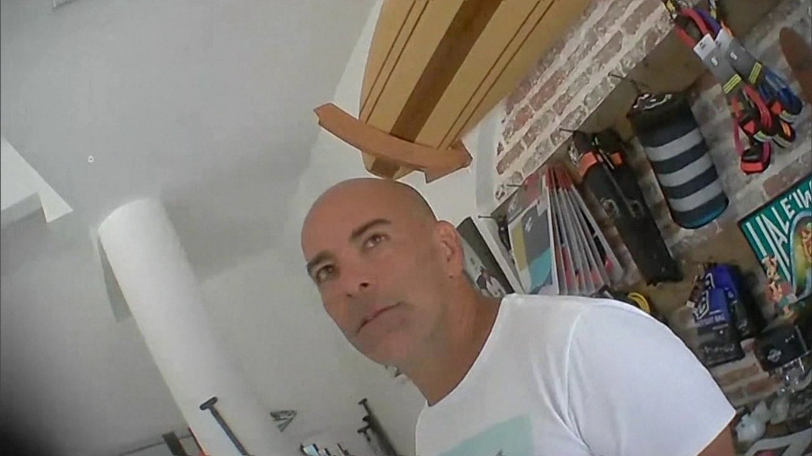

Por Bruno Albernaz, G1 Rio
28/12/2017 14h15 Atualizado há 20 minutos
Clique para ir para lisgta de links Os doleiros acusados de lavar dinheiro roubado pela quadrilha do ex-governador Sérgio Cabral, Vinícius Claret, conhecido como Juca Bala, e Cláudio Fernando Barbosa, o Tony, chegaram ao Rio de Janeiro na tarde desta quinta-feira (28) vindos do Uruguai.
Eles chegaram em um voo comercial que pousou no aeroporto do Galeão às 13h40.
A extradição deles foi concedida pelo governo uruguaio na semana passada. Escoltados por agentes da Polícia Federal,
os doleiros chegaram por volta das 14h45 ao
Instituto Médico Legal, na Zona Portuária.
Juca Bala e Tony fizeram exames e seguiram para a Cadeia Pública de Benfica, na Zona Norte, onde já estão presos.